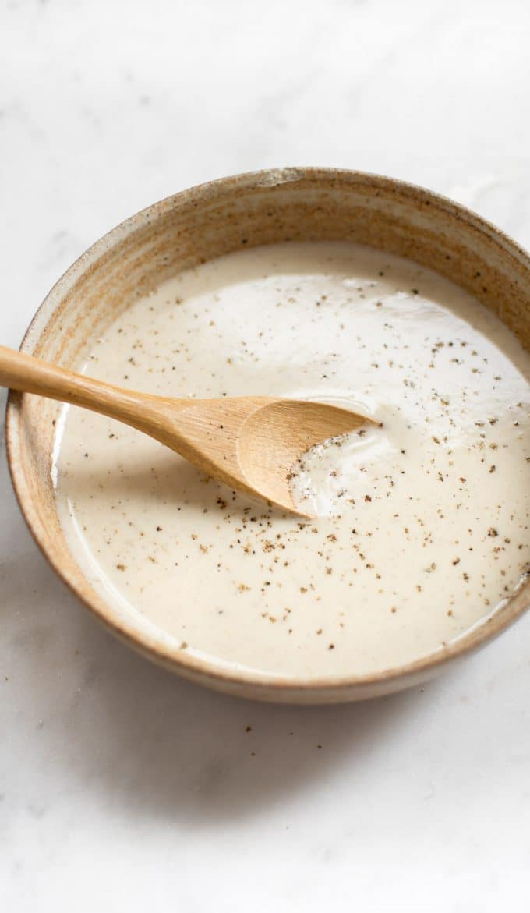

Everything Salad Vinaigrette

The best salad dressing/vinaigrette ever. Perfect match in ANY salad (pasta, kale, everything!). Creamy, a touch of acidity and full of flavors and spices.
Sources :
Ingredients :
- 2 tbsp. tahini
- 2 tbsp. apple cider vinegar
- 2 tbsp. lemon juice (or the juice of 1 big lemon)
- 1 tbsp. Nutritionnal Yeast
- 1 tsp. white miso
- 1 tsp. dried marjoram (or basil if you can't find any)
- 1/4 tsp. onion powder
- 1/4 tsp. garlic powder
- 1/4 tsp. ground black pepper
- 1/4 tsp. ground cumin
- Water to desired texture
Steps :
- Combine all the ingredients together in a jar with a tight seal.
- Shake the jar vigorously to mix well
- Add water until desired (more for a thinner dressing, less for thicker)